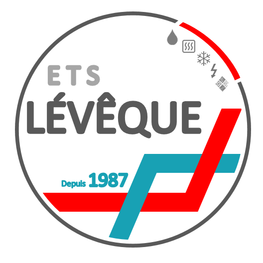

1935 — aujourd'hui
L'artisanat, une histoire de famille
Quatre générations d'artisans, une entreprise fondée en 1987 et transmise en 2024 — l'histoire continue.
Le fondateur
Jean-François Lévêque
« Nous sommes au service des particuliers et des professionnels sur l'agglomération périgourdine et la Dordogne. Spécialisés dans les domaines du chauffage, de la plomberie, du sanitaire et de l'électricité générale, nous mettons à contribution notre savoir-faire et notre réactivité pour vous apporter un travail sérieux et de qualité. Nous vous conseillons depuis le diagnostic jusqu'à la mise en service de votre installation. »
La frise
90 ans de métier, jalon par jalon
L'artisanat entre dans la famille Lévêque, avec le métier de boulanger.
Création de l'entreprise SARL ETS LÉVÊQUE par Jean-François Lévêque.
Premier partenariat signé avec le fournisseur de chauffage Viessmann.
Rachat de l'entreprise de M. Fontange, ramoneur à Périgueux (24000).
Embauche du 1er et du 2ème ouvrier de l'entreprise.
Reprise de la clientèle de M. Piques, chauffagiste à Boulazac (24750).
Achat de la première centrale de ramonage.
Rachat de l'entreprise de négoce en produits pétroliers, livraison de fioul et station-service à son père, Jean Lévêque.
Revente de la partie livraison et vente de fioul, et arrêt de la station-service.
Rachat de l'entreprise Nedelec, chauffage et sanitaire à Trélissac (24750).
Arrivée d'Amélie Lévêque dans l'entreprise.
Rachat de l'entreprise Roy Jean-Michel, électricité, chauffage et sanitaire à Boulazac (24750).
Arrivée de François Bouthier dans l'entreprise.
Pacte d'associés : rachat de parts par Amélie Lévêque et François Bouthier.
Transmission complète de l'entreprise SAS LÉVÊQUE à ses deux associés.
Départ à la retraite de Jean-François Lévêque.
L'identité
Un logo qui a grandi avec l'entreprise
Logo historique

2012
Logo précédent
Logo actuel
Les archives
L'entreprise en images, d'hier à aujourd'hui

Juin 1991 — les camions de l'entreprise

Juin 1991

La station-service, 1998

La grange-dépôt

Archives de l'entreprise

Archives de l'entreprise
Votre projet
Demandez votre devis gratuit
Un projet de chauffage, de salle de bain, d'électricité ou d'énergies renouvelables ? Parlons-en.